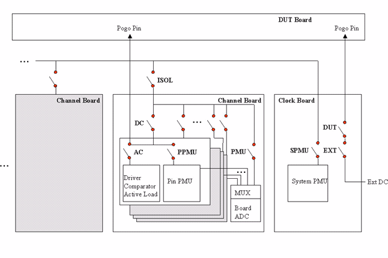

Disconnect
This test method disconnects the test system resources from the DUT and sets the test system to the DISCONNECT state independent of the current test system state.
This test method is only available for universal test method.
This test method performs the following operations:
- Sets sequencer to off state.
- Powers down the supplies in reverse order as defined in the pin configuration setup. At this time, the wait time defined in the level setup is not used.
- Disconnects all relays (includes multiplexer of analog modules).

Note The drivers automatically go tri-state when the sequencer is turned off.
Dependencies
- If the disconnect sequence cannot be executed successfully, the previous test system state is recovered.
- If this recovery fails, the current state is set to either CONNECTED or DISCONNECTED depending on the actual state of the hardware. If this occurs, extra warning messages will be displayed in the Report Window.
- The power-down sequence for the power supplies is the reverse of the order of the supplies in the level setup. If there is no level setup defined, a default sequence will be used.
Functional changes
- Introduced in SmarTest 6.5.2